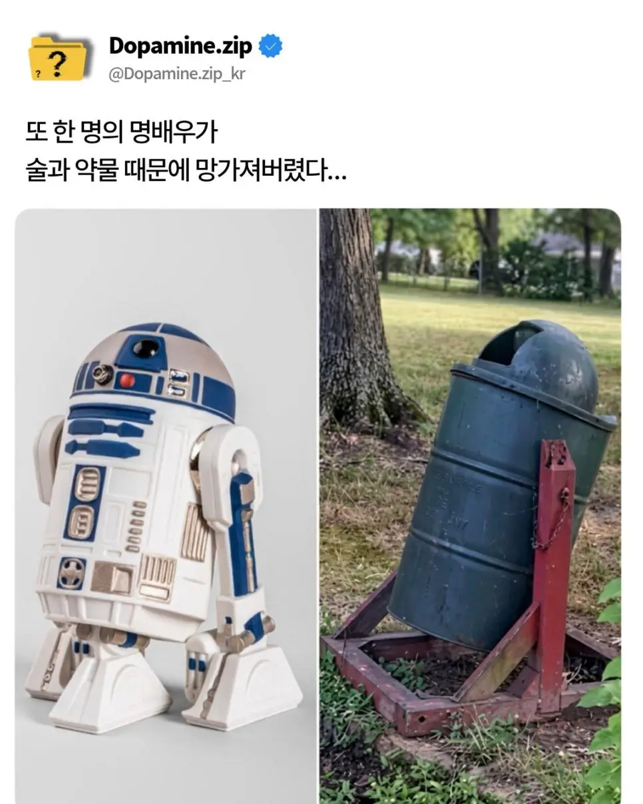

ㅜ ㅜ 어쩐지 다른애가 나오더라

ㅜ ㅜ 어쩐지 다른애가 나오더라
아역으로 바뀐거 성공했지 않나 반응 괜찮던데?
작품이 작살난거랑 별개로
그 bb 뭘로 시작하는 개인가
bb8 ㅇㅇ
아역배우가 성공한거지 쟤는 아니잖아 그게.
야빈전투때 검은색으로 도색했다는데 그때부터 나락간듯
어흑마이깟
진짜 젊을때 성공하는게 독이구나...
삐비빅... 삑삑..삑...
3po 걷어차고 그럴때부터 알아봤다
젊을때부터 WD-40을 그리 끼고 살더니면 결국 말년에 훅 가는구먼
강제로 먹여진거잖아!!!!
떡도 존나 침
첫 작품부터 너무 성공해버린게 원인이다